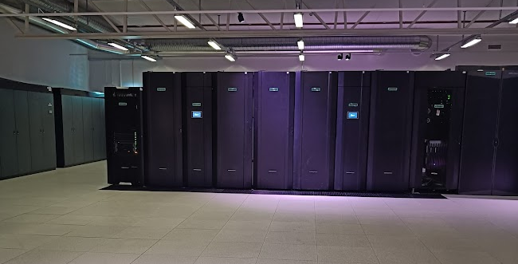

New system Arrhenius¶
Background¶
End-of-life of Alvis, Tetralith and Dardel
- Alvis (GPU and AI) Summer 2026
- Tetralith Autumn 2026
- Dardel Dec 2026-27
What is Arrhenius?¶

- This is the new HPC cluster by NAISS.
- Vast increase of GPU performance
- Reduced amount of nodes available for CPU calculations
- Decrease in storage facility
-
Sensitive partition Arrhenius-SENS replacing Bianca/Maja for non-UU users
-
2027: Just Arrhenius on national level is up and running.
What will happen?¶
- Active projects running on Alvis, Tetralith and Dardel will be migrated to the new system.
-
Timeline
-
Alvis: Summer
- Tetralith: Fall
- Dardel: End of year.
-
Bianca/Maja: End of year
-
Local clusters, like Kebnekaise, Pelle and Cosmos available for local university users several more years.
Hardware overview¶
- A HPC partition with 424 AMD Turin 128-core CPUs and 382 GPU nodes, each with four Grace Hopper Superchips from NVIDIA
- One partition for persistent computing and data with a cloud interface
- One partition dedicated to sensitive data
- A fast 29 PB parallel file system for storage
More technical information here: Arrhenius technical info